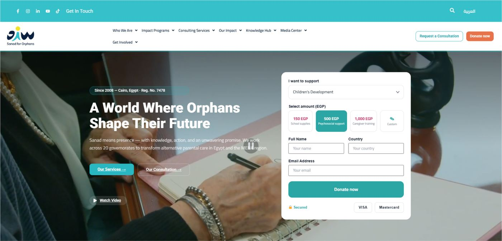
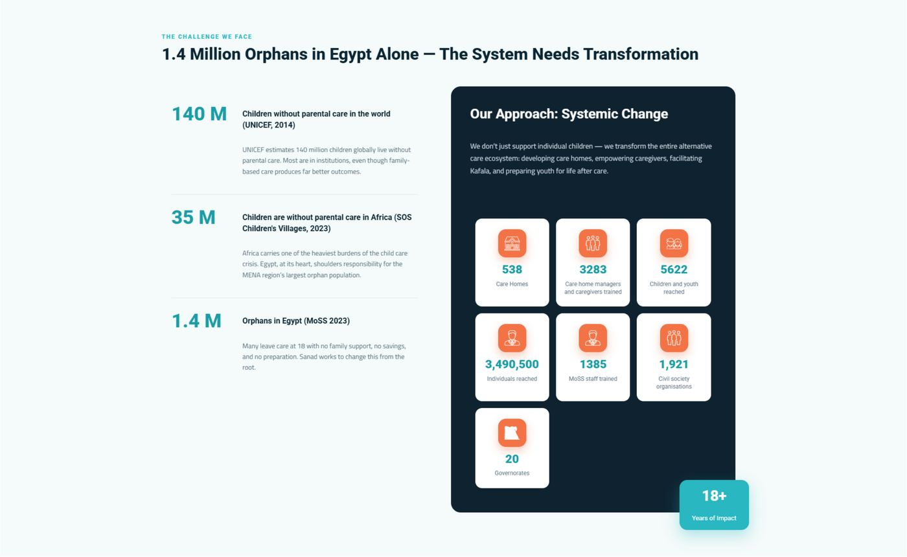
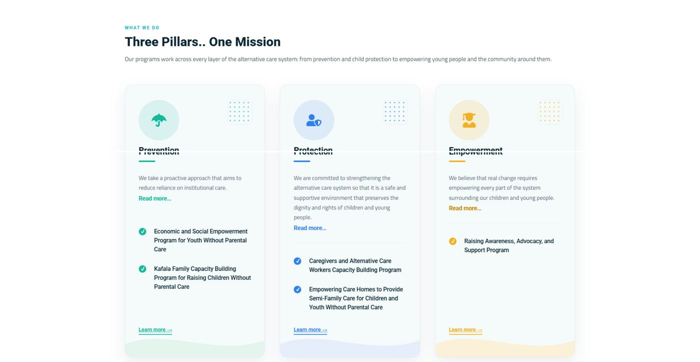
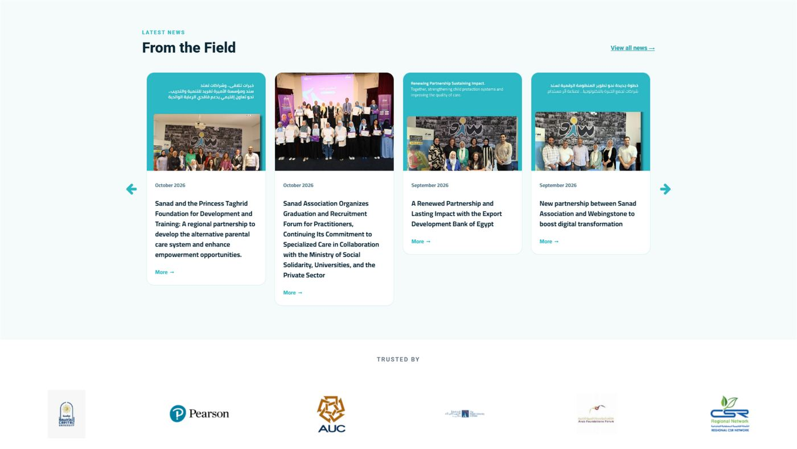
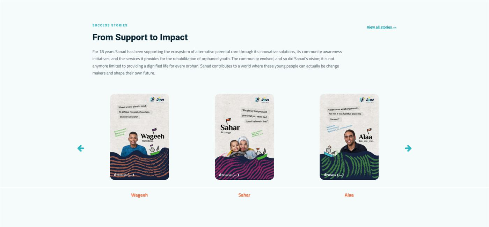
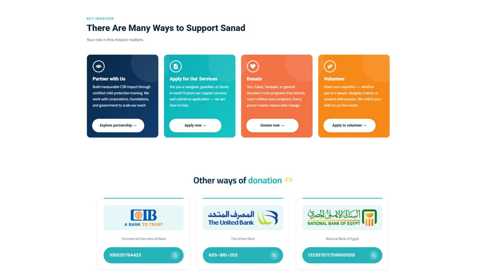
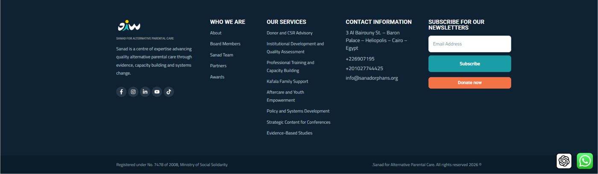

<title>Sanad Donor Homepage Research</title>
<meta name="claude:viewport-fit-sides" content="cover">
<link rel="preconnect" href="https://fonts.googleapis.com">
<link rel="preconnect" href="https://fonts.gstatic.com" crossorigin>
<link rel="stylesheet" href="https://fonts.googleapis.com/css2?family=Alexandria:wght@500;700&family=IBM+Plex+Sans+Arabic:wght@400;500;600&family=IBM+Plex+Mono:wght@400;500&display=swap">
<style>
/* Layout: a research dossier in Sanad's own palette (teal, navy, coral): one reading column, wide bands for annotated screenshots and the wireframe. Coral marks donate actions only. */
:root {
  --bg: #f5fbfb;
  --surface: #ffffff;
  --ink: #0f2233;
  --muted: #55687a;
  --line: #d5e4e6;
  --accent: #147f82;
  --accent-soft: #e0f2f2;
  --give: #c9502a;
  --give-ink: #ffffff;
  --crit: #b3262d;
  --crit-soft: #fbe7e7;
  --warn: #8a5600;
  --warn-soft: #fbf0d9;
  --ok: #17704a;
  --ok-soft: #e1f3e9;
  --wire: #edf4f4;
  --wire-line: #bfd2d4;
  --ring: #ffffff;
  --display: "Alexandria", "IBM Plex Sans Arabic", system-ui, sans-serif;
  --body: "IBM Plex Sans Arabic", system-ui, -apple-system, "Segoe UI", sans-serif;
  --mono: "IBM Plex Mono", ui-monospace, "SFMono-Regular", Menlo, monospace;
}
@media (prefers-color-scheme: dark) {
  :root:not([data-theme="light"]) {
    --bg: #0c1a26; --surface: #13263a; --ink: #e3eef2; --muted: #9db3bf; --line: #24405a;
    --accent: #5fd0d4; --accent-soft: #123a45; --give: #f47346; --give-ink: #1e0c04;
    --crit: #ff8a8a; --crit-soft: #3a1c1e; --warn: #f0b85a; --warn-soft: #3a2c12;
    --ok: #63d39f; --ok-soft: #14352a; --wire: #182f45; --wire-line: #355672;
    color-scheme: dark;
  }
}
:root[data-theme="dark"] {
  --bg: #0c1a26; --surface: #13263a; --ink: #e3eef2; --muted: #9db3bf; --line: #24405a;
  --accent: #5fd0d4; --accent-soft: #123a45; --give: #f47346; --give-ink: #1e0c04;
  --crit: #ff8a8a; --crit-soft: #3a1c1e; --warn: #f0b85a; --warn-soft: #3a2c12;
  --ok: #63d39f; --ok-soft: #14352a; --wire: #182f45; --wire-line: #355672;
  color-scheme: dark;
}

* { box-sizing: border-box; }
body {
  background: var(--bg); color: var(--ink);
  font-family: var(--body); font-size: 16.5px; line-height: 1.65;
  padding-left: max(16px, env(safe-area-inset-left, 0px));
  padding-right: max(16px, env(safe-area-inset-right, 0px));
  padding-block: 0 64px;
}
a { color: var(--accent); text-underline-offset: 3px; }
a:focus-visible, button:focus-visible { outline: 2px solid var(--accent); outline-offset: 2px; border-radius: 4px; }
h1, h2, h3 { font-family: var(--display); text-wrap: balance; line-height: 1.25; margin: 0; }
h2 { font-size: 1.65rem; font-weight: 700; }
h3 { font-size: 1.12rem; font-weight: 700; }
p { margin: 0; }
.col { max-width: 760px; margin-inline: auto; }
.wide { max-width: 1080px; margin-inline: auto; }
.stack { display: flex; flex-direction: column; gap: 14px; }
.eyebrow { font-family: var(--mono); font-size: .74rem; letter-spacing: .12em; text-transform: uppercase; color: var(--muted); }
.lede { font-size: 1.12rem; }
.muted { color: var(--muted); }
.small { font-size: .9rem; }
.ar { direction: rtl; text-align: right; }
.num { font-variant-numeric: tabular-nums; }
.code { font-family: var(--mono); font-size: .84rem; background: var(--bg); border: 1px solid var(--line); padding: 0 5px; border-radius: 4px; overflow-wrap: anywhere; }

/* masthead */
.mast { padding-block: 56px 36px; border-bottom: 1px solid var(--line); }
.mast h1 { font-size: clamp(2rem, 5.2vw, 3.1rem); font-weight: 700; letter-spacing: -.01em; margin-top: 10px; }
.mast .ar-title { font-family: var(--display); font-size: 1.25rem; color: var(--accent); margin-top: 6px; }
.meta { display: grid; grid-template-columns: repeat(auto-fit, minmax(160px, 1fr)); gap: 14px 24px; margin-top: 28px; }
.meta div { display: flex; flex-direction: column; gap: 2px; min-width: 0; }
.meta b { font-weight: 500; }
.brief { margin-top: 28px; padding: 18px 20px; background: var(--surface); border: 1px solid var(--line); border-radius: 10px; }
.brief p.ar { font-size: 1.02rem; line-height: 1.9; margin-top: 8px; }
.brief .tr { margin-top: 10px; font-size: .92rem; color: var(--muted); }

section { padding-block: 52px 8px; }
.sec-head { display: flex; flex-direction: column; gap: 6px; margin-bottom: 8px; max-width: 760px; }

/* findings */
.findings { display: grid; gap: 12px; }
.finding { display: grid; grid-template-columns: auto 1fr; gap: 4px 14px; padding: 16px 18px; background: var(--surface); border: 1px solid var(--line); border-radius: 10px; }
.finding .tag { grid-row: span 2; align-self: start; }
.finding p { min-width: 0; }
.pill { display: inline-flex; align-items: center; font-family: var(--mono); font-size: .72rem; letter-spacing: .06em; text-transform: uppercase; padding: 3px 9px; border-radius: 999px; white-space: nowrap; font-weight: 500; }
.p0 { background: var(--crit-soft); color: var(--crit); }
.p1 { background: var(--warn-soft); color: var(--warn); }
.p2 { background: var(--ok-soft); color: var(--ok); }
.info { background: var(--accent-soft); color: var(--accent); }
.keep { background: var(--ok-soft); border-radius: 10px; padding: 16px 18px; }
.keep ul { margin: 6px 0 0; padding-left: 20px; display: grid; grid-template-columns: repeat(auto-fit, minmax(240px, 1fr)); gap: 4px 24px; }
.callout { border-inline-start: 3px solid var(--accent); padding: 4px 0 4px 16px; }
.callout.warn { border-color: var(--warn); }
.callout.crit { border-color: var(--crit); }
.callout ol { margin: 0; padding-left: 20px; display: flex; flex-direction: column; gap: 6px; }

/* tables */
.tbl-wrap { overflow-x: auto; border: 1px solid var(--line); border-radius: 10px; background: var(--surface); }
table { border-collapse: collapse; width: 100%; font-size: .93rem; }
th, td { text-align: left; vertical-align: top; padding: 11px 14px; border-bottom: 1px solid var(--line); }
th { font-family: var(--mono); font-weight: 500; font-size: .72rem; letter-spacing: .08em; text-transform: uppercase; color: var(--muted); background: var(--bg); }
tr:last-child td { border-bottom: 0; }

/* annotated screenshots */
.audit { display: flex; flex-direction: column; gap: 44px; margin-top: 18px; }
.fig { margin: 0; display: flex; flex-direction: column; gap: 14px; }
.fig-head { display: flex; flex-wrap: wrap; align-items: baseline; gap: 6px 14px; }
.fig-head .eyebrow { color: var(--accent); }
.shot { position: relative; border: 1px solid var(--line); border-radius: 10px; overflow: hidden; background: var(--surface); max-width: 100%; }
.shot img { display: block; width: 100%; height: auto; }
.pin { position: absolute; transform: translate(-50%, -50%); width: 26px; height: 26px; border-radius: 50%; background: var(--give); color: var(--give-ink); font: 500 .78rem/1 var(--mono); display: grid; place-items: center; box-shadow: 0 0 0 3px var(--ring); }
@media (max-width: 560px) { .pin { width: 20px; height: 20px; font-size: .66rem; box-shadow: 0 0 0 2px var(--ring); } }
.issues { list-style: none; margin: 0; padding: 0; display: grid; grid-template-columns: repeat(auto-fit, minmax(300px, 1fr)); gap: 10px 28px; }
.issues li { display: grid; grid-template-columns: 26px 1fr; gap: 12px; align-items: start; font-size: .95rem; }
.issues li > div { min-width: 0; }
.issues .n { width: 24px; height: 24px; border-radius: 50%; background: var(--give); color: var(--give-ink); font: 500 .74rem/1 var(--mono); display: grid; place-items: center; margin-top: 2px; }
.issues .n.good { background: var(--ok); color: var(--surface); }

/* personas */
.grid2 { display: grid; grid-template-columns: repeat(auto-fit, minmax(300px, 1fr)); gap: 14px; }
.card { background: var(--surface); border: 1px solid var(--line); border-radius: 10px; padding: 18px; display: flex; flex-direction: column; gap: 10px; min-width: 0; }
.card .ar { font-size: .95rem; color: var(--accent); }
dl.kv { display: grid; grid-template-columns: max-content 1fr; gap: 4px 12px; margin: 0; font-size: .92rem; }
dl.kv dt { font-family: var(--mono); font-size: .72rem; letter-spacing: .06em; text-transform: uppercase; color: var(--muted); padding-top: 3px; }
dl.kv dd { margin: 0; min-width: 0; }

/* principles */
.principles { display: grid; border-top: 1px solid var(--line); margin-top: 10px; }
.principle { display: grid; grid-template-columns: minmax(0, 220px) 1fr; gap: 6px 24px; padding: 18px 0; border-bottom: 1px solid var(--line); }
.principle h3 { font-size: 1.02rem; }
.principle .evidence { font-size: .86rem; color: var(--muted); margin-top: 6px; }
@media (max-width: 640px) { .principle { grid-template-columns: 1fr; } }

/* blueprint */
.blueprint { display: grid; grid-template-columns: 380px 1fr; gap: 36px; align-items: start; margin-top: 18px; }
@media (max-width: 900px) { .blueprint { grid-template-columns: 1fr; } }
.phone { position: sticky; top: calc(env(safe-area-inset-top, 0px) + 16px); width: 100%; max-width: 380px; margin-inline: auto; border: 10px solid var(--ink); border-radius: 34px; background: var(--surface); overflow: hidden; }
@media (max-width: 900px) { .phone { position: static; } }
.screen { height: 720px; overflow-y: auto; direction: rtl; font-size: 12.5px; line-height: 1.55; position: relative; scrollbar-width: thin; }
.wf { border-bottom: 1px dashed var(--wire-line); padding: 12px 14px; display: flex; flex-direction: column; gap: 8px; position: relative; }
.wf .mark { position: absolute; left: 8px; top: 8px; font-family: var(--mono); font-size: 10px; width: 20px; height: 20px; border-radius: 50%; background: var(--ink); color: var(--surface); display: grid; place-items: center; direction: ltr; }
.wf h4 { margin: 0; font-family: var(--display); font-size: 15px; line-height: 1.35; padding-left: 22px; }
.wf .small { font-size: 11px; color: var(--muted); }
.bar { display: flex; align-items: center; justify-content: space-between; gap: 8px; padding-left: 22px; }
.logo { font-family: var(--display); font-weight: 700; font-size: 15px; color: var(--accent); }
.btn-give { background: var(--give); color: var(--give-ink); font-weight: 600; border-radius: 8px; padding: 8px 12px; text-align: center; font-size: 12.5px; }
.btn-ghost { border: 1px solid var(--wire-line); border-radius: 8px; padding: 6px 10px; text-align: center; font-size: 11.5px; }
.img-ph { background: repeating-linear-gradient(135deg, var(--wire) 0 8px, transparent 8px 16px); border: 1px solid var(--wire-line); border-radius: 8px; display: grid; place-items: center; color: var(--muted); font-size: 10.5px; text-align: center; padding: 6px; }
.widget { background: var(--bg); border: 1px solid var(--wire-line); border-radius: 10px; padding: 10px; display: flex; flex-direction: column; gap: 8px; }
.seg { display: grid; grid-template-columns: 1fr 1fr; background: var(--wire); border-radius: 8px; padding: 3px; gap: 3px; }
.seg span { text-align: center; padding: 5px 2px; border-radius: 6px; font-size: 11.5px; }
.seg .on { background: var(--surface); font-weight: 600; box-shadow: 0 0 0 1px var(--wire-line); }
.seg3 { grid-template-columns: 1fr 1fr 1fr; }
.amts { display: grid; grid-template-columns: 1fr 1fr 1fr; gap: 6px; }
.amt { border: 1px solid var(--wire-line); border-radius: 8px; padding: 6px 4px; text-align: center; background: var(--surface); }
.amt b { display: block; font-size: 13px; font-variant-numeric: tabular-nums; }
.amt i { font-style: normal; font-size: 10px; color: var(--muted); display: block; line-height: 1.3; }
.amt.on { border: 2px solid var(--accent); }
.field { border: 1px solid var(--wire-line); border-radius: 8px; padding: 6px 8px; color: var(--muted); font-size: 11.5px; background: var(--surface); }
.chips { display: flex; flex-wrap: wrap; gap: 5px; }
.chip { font-size: 10px; border: 1px solid var(--wire-line); border-radius: 999px; padding: 2px 8px; color: var(--muted); }
.fund { border: 1px solid var(--wire-line); border-radius: 10px; padding: 9px; display: flex; flex-direction: column; gap: 5px; }
.prog { height: 6px; background: var(--wire); border-radius: 99px; overflow: hidden; }
.prog i { display: block; height: 100%; background: var(--accent); }
.mini-stats { display: grid; grid-template-columns: 1fr 1fr; gap: 6px; }
.mini-stats div { background: var(--bg); border-radius: 8px; padding: 6px 8px; }
.mini-stats b { font-family: var(--display); font-size: 15px; display: block; font-variant-numeric: tabular-nums; }
.quote { font-family: var(--display); font-size: 13.5px; line-height: 1.5; }
.sticky-give { position: sticky; bottom: 0; background: var(--surface); border-top: 1px solid var(--wire-line); padding: 8px 12px; display: flex; gap: 8px; align-items: center; z-index: 2; }
.sticky-give .btn-give { flex: 1; }

.notes { display: flex; flex-direction: column; border-top: 1px solid var(--line); }
.note { display: grid; grid-template-columns: 30px 1fr; gap: 4px 12px; padding: 16px 0; border-bottom: 1px solid var(--line); }
.note > :not(.n) { grid-column: 2; min-width: 0; }
.note .n { font-family: var(--mono); font-size: .78rem; width: 26px; height: 26px; border-radius: 50%; background: var(--ink); color: var(--surface); display: grid; place-items: center; grid-row: 1 / span 4; }
.note h3 { font-size: 1rem; }
.note p, .note ul { font-size: .95rem; }
.note ul { margin: 4px 0 0; padding-left: 18px; }
.note .copy { margin-top: 8px; background: var(--surface); border: 1px solid var(--line); border-radius: 8px; padding: 10px 12px; font-size: .95rem; line-height: 1.8; }

/* flow, roadmap */
.flow { display: grid; grid-template-columns: repeat(auto-fit, minmax(200px, 1fr)); gap: 12px; margin-top: 10px; }
.step { background: var(--surface); border: 1px solid var(--line); border-radius: 10px; padding: 16px; display: flex; flex-direction: column; gap: 8px; min-width: 0; }
.step .eyebrow { color: var(--accent); }
.step ul { margin: 0; padding-left: 18px; font-size: .92rem; display: flex; flex-direction: column; gap: 3px; }
.road { display: grid; gap: 12px; }
.phase { display: grid; grid-template-columns: 170px 1fr; gap: 6px 22px; padding: 18px; background: var(--surface); border: 1px solid var(--line); border-radius: 10px; }
.phase ul { margin: 0; padding-left: 18px; display: flex; flex-direction: column; gap: 3px; min-width: 0; }
@media (max-width: 640px) { .phase { grid-template-columns: 1fr; } }

/* brand swatches */
.swatches { display: grid; grid-template-columns: repeat(auto-fit, minmax(150px, 1fr)); gap: 10px; }
.sw { border: 1px solid var(--line); border-radius: 10px; overflow: hidden; background: var(--surface); }
.sw i { display: block; height: 54px; }
.sw div { padding: 8px 10px; display: flex; flex-direction: column; gap: 1px; font-size: .86rem; }
.sw code { font-family: var(--mono); font-size: .78rem; color: var(--muted); }

.sources { font-size: .9rem; padding-left: 20px; display: flex; flex-direction: column; gap: 6px; margin: 0; }
.sources li { overflow-wrap: anywhere; }
ul.plain { margin: 0; padding-left: 20px; display: flex; flex-direction: column; gap: 6px; }
footer.end { margin-top: 48px; padding-top: 20px; border-top: 1px solid var(--line); font-size: .88rem; color: var(--muted); }
</style>

<header class="mast">
  <div class="col">
    <div class="eyebrow">UX research · Homepage donation conversion · October 2026</div>
    <h1>Sanad Donor Homepage Research</h1>
    <p class="ar-title ar" lang="ar" style="text-align:left">تحويل زيارة الصفحة الرئيسية إلى تبرّع</p>
    <p class="muted" style="margin-top:14px; font-size:.95rem">Arabic version: <a href="https://claude.ai/artifact/BZLmw8wAoPhDbmSVQKzj6G" target="_blank" rel="noopener" lang="ar">بحث تجربة متبرعي سند</a></p>
    <div class="meta">
      <div><span class="eyebrow">Client</span><b>Sanad for Alternative Parental Care</b><span class="muted" lang="ar">سند للرعاية الوالدية البديلة</span></div>
      <div><span class="eyebrow">Site</span><b>sanadorphans.org</b><span class="muted">Arabic + English</span></div>
      <div><span class="eyebrow">Goal</span><b>Grow individual donations</b><span class="muted">Homepage + donate flow</span></div>
      <div><span class="eyebrow">Status</span><b>Phase 1: expert audit</b><span class="muted">To validate with analytics and user tests</span></div>
    </div>
    <div class="brief">
      <span class="eyebrow">Client brief</span>
      <p class="ar" lang="ar">أرجو تقديم مقترحاتكم بشأن تجديد تصميم موقع جمعية سند طبقا لرؤيتكم والمستهدفات التي سبق وأن ناقشناها وعلى رأسها التوجه نحو تعظيم التبرعات الفردية وجعل تصميم الموقع يتناسب مع تشجيع المتصفحين على التبرع وفقا للتوجهات الاستراتيجية الحالية لدى الجمعية. كذلك أن يكون التصميم عصري وجذاب وسهل التصفح والاستخدام وأن يتوافق مع الهوية البصرية الخاصة بجمعية سند.</p>
      <p class="tr">Summary: redesign the site to maximise individual donations and actively encourage visitors to give, in line with Sanad's current strategy. The result should be modern, attractive, easy to browse and use, and consistent with Sanad's visual identity.</p>
    </div>
  </div>
</header>

<main>

<!-- ========== SUMMARY ========== -->
<section id="summary">
  <div class="col stack">
    <div class="sec-head">
      <span class="eyebrow">Executive summary</span>
      <h2>The homepage asks for donations but speaks to four audiences at once</h2>
    </div>
    <p class="lede">The current homepage already does several things right: it has a donation form in the hero, amounts tied to outcomes, the registration number above the fold, real youth stories and bank details with copy buttons. Individual giving still has to compete. Consulting clients, institutional partners, service applicants and donors get equal weight. The form stops short of how most Egyptians pay. And the copy tells individual donors that Sanad doesn't fund individual children. The redesign should keep the foundations and make the homepage the donor's page.</p>

    <div class="keep">
      <h3>Keep and build on</h3>
      <ul>
        <li>Donation widget in the hero</li>
        <li>Amounts with outcomes (150 / 500 / 1,000 EGP)</li>
        <li>"Since 2008 · Reg. No. 7478" in the hero</li>
        <li>The Wageeh, Sahar and Alaa stories</li>
        <li>Bank accounts with copy buttons</li>
        <li>WhatsApp button and the coral "Donate now" in the header</li>
      </ul>
    </div>

    <div class="findings">
      <div class="finding"><span class="pill p0 tag">P0</span><h3>The domain is serving spam pages in Google</h3><p>Search results show gambling-titled pages on <span class="code">sanadorphans.org/?go=…</span> that reuse Sanad's donation text. This hurts trust and search ranking, and may point to a compromised CMS next to a payment form. Fix it before launch.</p></div>
      <div class="finding"><span class="pill p1 tag">P1</span><h3>Donors share the stage with consulting clients</h3><p>The header pairs "Request a Consultation" with "Donate now". The two hero buttons are "Our Services" and "Our Consultation". The nav leads with Consulting Services and Knowledge Hub. Donate is the third of four cards under Get Involved.</p></div>
      <div class="finding"><span class="pill p1 tag">P1</span><h3>The hero form stops short of how Egyptians give</h3><p>It is one-time only, with no Zakat or Sadaqah choice and the fund hidden in a dropdown. It asks for Country and Email before payment, and offers Visa and Mastercard in EGP only: no wallets, InstaPay, Fawry, Apple Pay or Google Pay.</p></div>
      <div class="finding"><span class="pill p1 tag">P1</span><h3>The copy undercuts individual giving</h3><p>"We don't just support individual children — we transform the entire alternative care ecosystem" is accurate, but it tells a retail donor their gift isn't for a child. Half the impact tiles count MoSS staff and NGOs trained.</p></div>
      <div class="finding"><span class="pill p2 tag">P2</span><h3>The strongest content sits low on the page and has no donate action</h3><p>The stories are posters in a carousel near the bottom. Their quotes are image text, and no donate button follows them.</p></div>
      <div class="finding"><span class="pill p2 tag">P2</span><h3>Colour, contrast and data hygiene</h3><p>The donate button is coral in the header but teal in the form. White text on Sanad's teal and coral buttons is 2.2–3.0:1, below the 4.5:1 WCAG AA minimum. Numbers conflict across pages (538 vs 338 vs 265 care homes; 20 vs 19 governorates). One phone number is malformed, and a floating button uses the ChatGPT logo.</p></div>
    </div>

    <div class="callout">
      <h3 style="margin-bottom:8px">Top five recommendations</h3>
      <ol>
        <li><b>Make the homepage the donor's page.</b> Point the hero buttons at giving and stories, keep one header CTA, and move consulting, knowledge hub and partner content into a "For organisations" area.</li>
        <li><b>Upgrade the hero form:</b> add a monthly / one-time toggle and a Zakat / Sadaqah / General choice, show the funds as visible options, ask for phone instead of country, and put the amount in the button.</li>
        <li><b>Add the payment methods Egyptians use:</b> mobile wallets, InstaPay, Fawry reference codes, Apple Pay and Google Pay, plus foreign cards in USD, SAR and AED.</li>
        <li><b>Reframe the message and bring the stories up.</b> "Your gift reaches children through the people who raise them." Turn Wageeh, Sahar and Alaa into text quotes with a donate action after them.</li>
        <li><b>Add a Zakat path and launch before Ramadan 2027</b> (expected around 8 February, subject to moon sighting), with Orphan Day on 2 April 2027 as the second peak.</li>
      </ol>
    </div>
  </div>
</section>

<!-- ========== METHOD ========== -->
<section id="method">
  <div class="col stack">
    <div class="sec-head">
      <span class="eyebrow">Method and limits</span>
      <h2>How we reached these findings</h2>
    </div>
    <div class="tbl-wrap">
      <table>
        <thead><tr><th>Input</th><th>What we did</th><th>Confidence</th></tr></thead>
        <tbody>
          <tr><td>Homepage screenshots (EN, desktop)</td><td>A section-by-section expert review of the current design against donation-UX heuristics, with WCAG contrast measured from the screenshot pixels.</td><td><span class="pill p2">High</span></td></tr>
          <tr><td>Indexed site pages (AR + EN)</td><td>Reviewed the search-indexed donations, impact, stories and who-we-are pages and the URL structure.</td><td><span class="pill p1">Medium</span></td></tr>
          <tr><td>Domain health</td><td><span class="code">site:</span> searches showing what people searching for Sanad see.</td><td><span class="pill p2">High</span></td></tr>
          <tr><td>Giving benchmarks</td><td>M+R Benchmarks 2025/2026: donation-page conversion, monthly giving share, retention.</td><td><span class="pill p2">High</span> for direction, <span class="pill p1">Medium</span> for Egypt</td></tr>
          <tr><td>Egyptian giving context</td><td>Payment rails (Fawry, wallets, InstaPay), how peer charities handle Zakat, Ramadan giving guides.</td><td><span class="pill p1">Medium</span></td></tr>
        </tbody>
      </table>
    </div>
    <div class="callout warn">
      <p><b>Still missing:</b> we reviewed the English desktop homepage. We still need four things before we finalise: screenshots or a screen recording of the <b>Arabic</b> and <b>mobile</b> homepage, the donate flow after "Donate now" is pressed, analytics access, and the payment gateway dashboard. Most Egyptian donors arrive on phones, in Arabic, so the mobile review may change the priorities.</p>
    </div>
  </div>
</section>

<!-- ========== AUDIT ========== -->
<section id="audit">
  <div class="wide">
    <div class="sec-head">
      <span class="eyebrow">Current design audit</span>
      <h2>The homepage today, section by section</h2>
      <p class="muted">Screenshots of the English desktop homepage, October 2026. Coral pins mark issues and green numbers mark what already works.</p>
    </div>

    <div class="audit">

      <figure class="fig" id="fig-hero">
        <div class="fig-head"><span class="eyebrow">A · Header and hero</span><h3>A strong start, split between two audiences</h3></div>
        <div class="shot">
          
          <span class="pin" style="left:24.2%;top:12.5%">1</span>
          <span class="pin" style="left:87.5%;top:14.9%">2</span>
          <span class="pin" style="left:22.1%;top:70.3%">3</span>
          <span class="pin" style="left:49.9%;top:59.7%">4</span>
          <span class="pin" style="left:69%;top:38%">5</span>
          <span class="pin" style="left:61%;top:49.3%">6</span>
          <span class="pin" style="left:69%;top:65.8%">7</span>
          <span class="pin" style="left:80.4%;top:85.9%">8</span>
        </div>
        <ol class="issues">
          <li><span class="n">1</span><div><b>Seven dropdown menus</b> wrap onto two lines. Consulting Services, Knowledge Hub and Media Center sit level with the donor items.</div></li>
          <li><span class="n">2</span><div><b>"Request a Consultation"</b> carries the same weight as "Donate now". Keep one primary action in the header.</div></li>
          <li><span class="n">3</span><div><b>The hero buttons lead away from giving.</b> "Our Services" and "Our Consultation" send people off the page, away from the form beside them. A white-on-teal button has 2.2:1 contrast.</div></li>
          <li><span class="n">4</span><div><b>The video's pause control covers the sub-headline,</b> and thin white text over a moving image is hard to read.</div></li>
          <li><span class="n">5</span><div><b>The fund choice is hidden</b> in a dropdown ("Children's Development"), so visitors can't see what else they could fund.</div></li>
          <li><span class="n">6</span><div><b>The amount labels are good: keep them.</b> The 9–10px captions are too small, though, and there is no monthly option and no Zakat or Sadaqah choice.</div></li>
          <li><span class="n">7</span><div><b>Three required fields come before payment.</b> Country is free text and adds friction. Ask for phone instead (for a WhatsApp receipt) and make email optional.</div></li>
          <li><span class="n">8</span><div><b>The button doesn't say the amount,</b> is teal (2.96:1) while the header's donate button is coral, and only Visa and Mastercard in EGP are offered.</div></li>
        </ol>
      </figure>

      <figure class="fig" id="fig-stats">
        <div class="fig-head"><span class="eyebrow">B · Challenge and impact</span><h3>Good framing, wrong numbers for a donor</h3></div>
        <div class="shot">
          
          <span class="pin" style="left:20.9%;top:10%">1</span>
          <span class="pin" style="left:63.6%;top:26.6%">2</span>
          <span class="pin" style="left:65.5%;top:48.4%">3</span>
          <span class="pin" style="left:56.5%;top:80.2%">4</span>
          <span class="pin" style="left:78.7%;top:90.5%">5</span>
        </div>
        <ol class="issues">
          <li><span class="n">1</span><div><b>The global figures come first</b> (140M from UNICEF 2014, now 12 years old). Lead with Egypt and the moment donors can picture: leaving care at 18 with no family support.</div></li>
          <li><span class="n">2</span><div><b>"We don't just support individual children"</b> pushes away the people the strategy wants to attract. Say how the gift reaches children instead.</div></li>
          <li><span class="n">3</span><div><b>Donor outcomes mix with B2B outputs.</b> Children reached sits next to MoSS staff and civil-society organisations trained, and number formats differ (3283 vs 3,490,500).</div></li>
          <li><span class="n">4</span><div><b>One tile sits alone, and the numbers conflict</b> with other Sanad pages: 538 care homes here, 338 on the indexed homepage, 265 in an end-2024 profile; 20 vs 19 governorates.</div></li>
          <li><span class="n">5</span><div><b>The section ends without an action.</b> After the strongest emotional fact on the page, the visitor gets no way to help.</div></li>
        </ol>
      </figure>

      <figure class="fig" id="fig-pillars">
        <div class="fig-head"><span class="eyebrow">C · Three pillars</span><h3>Sector language where donors need plain words</h3></div>
        <div class="shot">
          
          <span class="pin" style="left:22.7%;top:40.4%">1</span>
          <span class="pin" style="left:29.3%;top:75.8%">2</span>
          <span class="pin" style="left:22.1%;top:91.1%">3</span>
        </div>
        <ol class="issues">
          <li><span class="n">1</span><div><b>Prevention, Protection and Empowerment</b> are the right structure but abstract labels. Keep the three pillars and give each a donor-facing name and outcome.</div></li>
          <li><span class="n">2</span><div><b>The program titles are formal</b> ("Kafala Family Capacity Building Program for Raising Children Without Parental Care"). Use one plain line each.</div></li>
          <li><span class="n">3</span><div><b>Each card has two links</b> ("Read more…" and "Learn more →") and no way to give to that pillar.</div></li>
        </ol>
      </figure>

      <figure class="fig" id="fig-news">
        <div class="fig-head"><span class="eyebrow">D · News and partners</span><h3>Institutional news in prime position</h3></div>
        <div class="shot">
          
          <span class="pin" style="left:50.2%;top:50.8%">1</span>
          <span class="pin" style="left:25.9%;top:19.8%">2</span>
          <span class="pin" style="left:58.6%;top:92.1%">3</span>
        </div>
        <ol class="issues">
          <li><span class="n">1</span><div><b>Four partnership and MoU stories take the middle of the page.</b> They matter to partners. For donors, move them lower or into the media centre.</div></li>
          <li><span class="n">2</span><div><b>The news images carry Arabic text</b> on the English page, and the text is too small to read at card size.</div></li>
          <li><span class="n">3</span><div><b>The "Trusted by" logos are tiny and low-resolution,</b> and several can't be read. Use fewer, sharper logos with permission, and place them near the donate form.</div></li>
        </ol>
      </figure>

      <figure class="fig" id="fig-stories">
        <div class="fig-head"><span class="eyebrow">E · Success stories</span><h3>The best content on the page, too low and too small</h3></div>
        <div class="shot">
          
          <span class="pin" style="left:28.4%;top:59.4%">1</span>
          <span class="pin" style="left:49.9%;top:56.1%">2</span>
          <span class="pin" style="left:49.9%;top:85.8%">3</span>
        </div>
        <ol class="issues">
          <li><span class="n good">1</span><div><b>Real names and quotes in a distinctive illustrated style: keep it.</b> But the quotes are image text, so they are small, untranslated and invisible to screen readers and search.</div></li>
          <li><span class="n">2</span><div><b>One poster shows an identifiable young child.</b> Confirm consent and the safeguarding policy before using it in fundraising.</div></li>
          <li><span class="n">3</span><div><b>The names float below the carousel,</b> cut off from their cards, and no donate action follows the stories.</div></li>
        </ol>
      </figure>

      <figure class="fig" id="fig-involved">
        <div class="fig-head"><span class="eyebrow">F · Get involved and bank transfer</span><h3>Donate is one choice among four</h3></div>
        <div class="shot">
          
          <span class="pin" style="left:56.9%;top:27.9%">1</span>
          <span class="pin" style="left:48.9%;top:65.1%">2</span>
          <span class="pin" style="left:29.3%;top:92.1%">3</span>
        </div>
        <ol class="issues">
          <li><span class="n">1</span><div><b>Donate is the third of four equal cards,</b> after Partner and Apply for services, and four saturated colours compete for attention.</div></li>
          <li><span class="n">2</span><div><b>"Other ways of donation"</b> should read "Other ways to donate". Only bank transfer is listed.</div></li>
          <li><span class="n good">3</span><div><b>Account numbers with copy buttons are good.</b> Add the account name, IBAN and SWIFT for donors abroad, InstaPay and wallet options, and "send us your receipt on WhatsApp".</div></li>
        </ol>
      </figure>

      <figure class="fig" id="fig-footer">
        <div class="fig-head"><span class="eyebrow">G · Footer</span><h3>Small details that cost trust</h3></div>
        <div class="shot">
          
          <span class="pin" style="left:24.2%;top:22.1%">1</span>
          <span class="pin" style="left:60.3%;top:33.8%">2</span>
          <span class="pin" style="left:94.4%;top:80%">3</span>
        </div>
        <ol class="issues">
          <li><span class="n">1</span><div><b>The names differ:</b> "Sanad for Alternative Parental Care" here, "Sanad for Orphans" under the header logo. Pick one name for each language.</div></li>
          <li><span class="n">2</span><div><b>"+226907195" is missing digits</b> (probably +20 2 26907195), so it can't be dialled from abroad.</div></li>
          <li><span class="n">3</span><div><b>A floating button uses the ChatGPT logo.</b> It is unbranded and confusing, and may raise trademark issues. Replace it with a Sanad-branded "Ask us" icon, or remove it.</div></li>
        </ol>
      </figure>

    </div>

    <div class="col" style="margin-top:36px; max-width:1080px">
      <div class="callout crit">
        <h3 style="margin-bottom:4px">The core design problem</h3>
        <p>Most orphan charities sell a simple promise: sponsor a child. Sanad's model is better for children (family-based care, trained caregivers, independent youth), but it gives donors no concrete thing to picture, and the homepage currently says so in as many words. The redesign has to close that gap. Each pillar needs a donor-sized unit (the current form already has three: school supplies, psychosocial support, caregiver training), a price, and a consented story that shows it working.</p>
      </div>
    </div>
  </div>
</section>

<!-- ========== DONORS ========== -->
<section id="donors">
  <div class="wide stack">
    <div class="sec-head">
      <span class="eyebrow">Who we are designing for</span>
      <h2>Four donor proto-personas</h2>
      <p class="muted">These are hypotheses built from Egyptian giving patterns. Validate them with Sanad's donor list and the survey in the research plan.</p>
    </div>
    <div class="grid2">
      <article class="card">
        <span class="pill info" style="align-self:flex-start">Seasonal, high value</span>
        <h3>The Zakat giver</h3>
        <p class="ar" lang="ar">"عايز أتأكد إن زكاتي في مكانها الصحيح"</p>
        <dl class="kv">
          <dt>Who</dt><dd>Cairo or Alexandria professional, 35–60, gives mostly in Ramadan.</dd>
          <dt>Device</dt><dd>Phone first. Often pays by InstaPay, wallet or bank transfer.</dd>
          <dt>Needs</dt><dd>Zakat eligibility proof, a calculator and an official receipt.</dd>
          <dt>Drops off if</dt><dd>Zakat validity is unclear or their payment method is missing.</dd>
        </dl>
      </article>
      <article class="card">
        <span class="pill info" style="align-self:flex-start">Emotional, repeat</span>
        <h3>The orphan Sadaqah giver</h3>
        <p class="ar" lang="ar">"أنا وكافل اليتيم في الجنة"</p>
        <dl class="kv">
          <dt>Who</dt><dd>Gives regularly to orphan causes, often on Orphan Day (first Friday of April) or on Fridays.</dd>
          <dt>Device</dt><dd>Phone, often arriving from Facebook or Instagram.</dd>
          <dt>Needs</dt><dd>To feel a link to a child's life and know the gift continues (Sadaqah Jariyah).</dd>
          <dt>Drops off if</dt><dd>The page reads as abstract ("systemic change", "capacity building").</dd>
        </dl>
      </article>
      <article class="card">
        <span class="pill info" style="align-self:flex-start">High value, low friction tolerance</span>
        <h3>The Egyptian abroad</h3>
        <p class="ar" lang="ar">"عايز أساعد في بلدي بس مش عارف مين أثق فيه"</p>
        <dl class="kv">
          <dt>Who</dt><dd>Egyptian in the Gulf, Europe or North America who gives in USD, SAR or AED.</dd>
          <dt>Device</dt><dd>Phone. Expects Apple Pay or Google Pay.</dd>
          <dt>Needs</dt><dd>Trust signals, foreign cards, IBAN and SWIFT, a receipt, and impact updates.</dd>
          <dt>Drops off if</dt><dd>Only EGP is offered, the card fails, or a phone number doesn't work.</dd>
        </dl>
      </article>
      <article class="card">
        <span class="pill info" style="align-self:flex-start">Small gift, high reach</span>
        <h3>The young professional</h3>
        <p class="ar" lang="ar">"هتبرع بحاجة بسيطة وأشارك"</p>
        <dl class="kv">
          <dt>Who</dt><dd>Aged 22–34, arrives from Instagram or an employer CSR day, cares about youth and jobs.</dd>
          <dt>Device</dt><dd>Phone with a wallet app.</dd>
          <dt>Needs</dt><dd>A small preset amount, payment in under a minute, something to share, and volunteering or mentoring.</dd>
          <dt>Drops off if</dt><dd>The form has many fields or the smallest amount feels high.</dd>
        </dl>
      </article>
    </div>
  </div>
</section>

<!-- ========== PRINCIPLES ========== -->
<section id="principles">
  <div class="col">
    <div class="sec-head">
      <span class="eyebrow">Design principles</span>
      <h2>What makes people give, applied to Sanad</h2>
    </div>
    <div class="principles">
      <div class="principle"><h3>One audience per page</h3><div><p>The homepage serves donors. Consulting clients, partners and service applicants get a clear "For organisations" door in the nav, but they don't share the hero.</p></div></div>
      <div class="principle"><h3>One clear ask per screen</h3><div><p>Every homepage section ends in the same coral "Donate" action. Secondary actions (volunteer, partner, learn) are visually quieter.</p></div></div>
      <div class="principle"><h3>Make impact countable</h3><div><p>Sanad's form already pairs amounts with outcomes. Extend this to every pillar and every amount, and make the labels readable.</p><p class="evidence">Sanad's finance team should confirm that each amount buys what its label says.</p></div></div>
      <div class="principle"><h3>One face, ethically</h3><div><p>Donors respond more to one identifiable person than to statistics (Small, Loewenstein and Slovic, 2007). Sanad already has consenting young adults (Wageeh, Alaa) and caregivers. Lead with them and avoid identifiable children.</p></div></div>
      <div class="principle"><h3>Default to monthly, gently</h3><div><p>Show the monthly tab first, with one-time a tap away. About 71% of monthly donors are still giving after a year, against about 24% of new one-time donors (M+R, reported by Truesense). Monthly giving was about 31% of online revenue in M+R 2025.</p></div></div>
      <div class="principle"><h3>Trust next to the button</h3><div><p>Keep the registration line in the hero and add payment security, the receipt promise and one external credential (Pearson) beside the form, not only in the footer.</p></div></div>
      <div class="principle"><h3>Speak the giver's faith</h3><div><p>Show Zakat, Sadaqah and Sadaqah Jariyah as explicit choices, with an eligibility statement and a calculator. In Ramadan, lead with Zakat.</p></div></div>
      <div class="principle"><h3>Remove every field you can</h3><div><p>For the first gift, ask only for amount, name, phone and payment. Make email optional and drop country.</p></div></div>
      <div class="principle"><h3>Arabic first, mobile first</h3><div><p>Design in Arabic on a phone, then mirror to English and desktop. Keep numerals left-to-right inside right-to-left text.</p></div></div>
    </div>
  </div>
</section>

<!-- ========== BLUEPRINT ========== -->
<section id="blueprint">
  <div class="wide">
    <div class="sec-head">
      <span class="eyebrow">Proposed homepage</span>
      <h2>A mobile-first homepage built around the donation</h2>
      <p class="muted">The wireframe shows structure and copy direction in Sanad's palette. It reuses Sanad's own amounts, pillars, figures and stories wherever they exist. Scroll inside the phone to see every section.</p>
    </div>

    <div class="blueprint">
      <div class="phone" aria-label="Mobile homepage wireframe in Arabic">
        <div class="screen" lang="ar">
          <div class="wf">
            <span class="mark">1</span>
            <div class="bar"><span class="logo">سند</span><span class="small">EN · ☰</span><span class="btn-give">تبرّع</span></div>
          </div>
          <div class="wf">
            <span class="mark">2</span>
            <div class="img-ph" style="height:110px">صورة ثابتة لمقدّمة رعاية مع شاب من خرّيجي الدار (بموافقة)، والفيديو عند الضغط فقط</div>
            <h4>كل طفل يستحق رعاية تشبه حضن الأسرة</h4>
            <p class="small">منذ 2008 · مشهرة برقم 7478 · نصل للأطفال من خلال من يربّونهم، في 20 محافظة.</p>
            <div class="widget">
              <div class="seg"><span class="on">شهريًا</span><span>مرة واحدة</span></div>
              <div class="seg seg3"><span class="on">صدقة</span><span>زكاة</span><span>تبرع عام</span></div>
              <div class="amts">
                <div class="amt"><b>150 ج.م</b><i>أدوات مدرسية</i></div>
                <div class="amt on"><b>500 ج.م</b><i>دعم نفسي</i></div>
                <div class="amt"><b>1,000 ج.م</b><i>تدريب مقدّم رعاية</i></div>
              </div>
              <div class="field">مبلغ آخر</div>
              <span class="btn-give">أكون سندًا بـ 500 ج.م شهريًا</span>
              <div class="chips"><span class="chip">Apple Pay</span><span class="chip">بطاقة</span><span class="chip">محفظة</span><span class="chip">InstaPay</span><span class="chip">فوري</span></div>
            </div>
          </div>
          <div class="wf">
            <span class="mark">3</span>
            <p class="small">✓ دفع آمن · ✓ إيصال فوري على واتساب · ✓ برامج معتمدة من Pearson · ✓ 18 عامًا من العمل</p>
          </div>
          <div class="wf">
            <span class="mark">4</span>
            <h4>1.4 مليون يتيم في مصر. كثيرون يغادرون الدار في سن 18 بلا أسرة ولا مدخرات.</h4>
            <p class="small">المصدر: وزارة التضامن الاجتماعي 2023 · «هنا يأتي دورك»</p>
            <span class="btn-give">ساعد شابًا يبدأ حياته</span>
          </div>
          <div class="wf">
            <span class="mark">5</span>
            <h4>اختر أين يذهب تبرعك</h4>
            <div class="fund"><b>أسرة لكل طفل · الوقاية</b><span class="small">دعم الكفالة والأسر البديلة</span><div class="prog"><i style="width:45%"></i></div><span class="btn-ghost">تبرّع لهذا البرنامج</span></div>
            <div class="fund"><b>بيت آمن · الحماية</b><span class="small">تدريب مقدّمي الرعاية وتطوير دور الرعاية</span><div class="prog"><i style="width:62%"></i></div><span class="small">62% من هدف رمضان</span><span class="btn-ghost">تبرّع لهذا البرنامج</span></div>
            <div class="fund"><b>خطوة للاستقلال · التمكين</b><span class="small">تأهيل الشباب للعمل والحياة بعد الدار</span><div class="prog"><i style="width:38%"></i></div><span class="btn-ghost">تبرّع لهذا البرنامج</span></div>
          </div>
          <div class="wf">
            <span class="mark">6</span>
            <div class="img-ph" style="height:100px">ملصق وجيه بالأسلوب الحالي، والاقتباس نص حقيقي وليس صورة</div>
            <p class="quote">«عندي أكثر من خطة. لو واحدة ما نجحتش، التانية هتنجح.»</p>
            <p class="small">وجيه، #طموح · <span dir="ltr">1 / 3</span> قصص</p>
            <span class="btn-give">ساعد شابًا آخر مثل وجيه</span>
          </div>
          <div class="wf">
            <span class="mark">7</span>
            <h4>أثرنا حتى [الشهر / السنة]</h4>
            <div class="mini-stats"><div><b>538</b><span class="small">دار رعاية</span></div><div><b>3,283</b><span class="small">مقدّم رعاية مدرّب</span></div><div><b>5,622</b><span class="small">طفل وشاب</span></div><div><b>20</b><span class="small">محافظة</span></div></div>
          </div>
          <div class="wf">
            <span class="mark">8</span>
            <h4>زكاتك تصل لمستحقيها</h4>
            <p class="small">مرجع الفتوى أو البيان الشرعي · احسب زكاتك</p>
            <span class="btn-ghost">احسب زكاتك</span>
          </div>
          <div class="wf">
            <span class="mark">9</span>
            <h4>كيف نستخدم تبرعك؟</h4>
            <div class="prog" style="height:10px"><i style="width:80%"></i></div>
            <p class="small">[٪] للبرامج · [٪] للتشغيل · التقرير السنوي والقوائم المالية المراجعة</p>
          </div>
          <div class="wf">
            <span class="mark">10</span>
            <h4>طرق أخرى للتبرع</h4>
            <p class="small">CIB · المصرف المتحد · البنك الأهلي (اسم الحساب + IBAN + نسخ) · InstaPay · المحافظ · فوري · إهداء باسم شخص عزيز</p>
          </div>
          <div class="wf">
            <span class="mark">11</span>
            <p class="small">للمؤسسات: الاستشارات · مركز المعرفة · الشراكات · التطوع · الخصوصية · الاسترداد · واتساب</p>
          </div>
          <div class="sticky-give"><span class="btn-give">تبرّع الآن</span><span class="btn-ghost">زكاة</span></div>
        </div>
      </div>

      <div class="notes">
        <div class="note"><span class="n">1</span><h3>Header with one primary action</h3><p>Five items: من نحن · برامجنا · أثرنا · قصص · للمؤسسات. Consulting, knowledge hub and media move under "For organisations". "Request a Consultation" leaves the header, and coral "تبرّع" stays visible while scrolling.</p></div>
        <div class="note"><span class="n">2</span><h3>Hero: keep the form, refocus everything around it</h3><p>The headline speaks to the child, the subhead keeps the registration line and says how the gift reaches children, and the form gains the missing choices.</p>
          <ul><li>Monthly preselected, plus a Zakat / Sadaqah / General choice. Sanad's own three amounts, with readable labels and 500 preselected.</li><li>The button repeats the choice: «أكون سندًا بـ 500 ج.م شهريًا».</li><li>A still image loads first, and the video plays only on tap, which saves data on mobile.</li></ul>
          <div class="copy ar" lang="ar">بدائل للعنوان: «عالم يصنع فيه كل يتيم مستقبله» (الشعار الحالي) · «لا يكبر أي طفل وحده»</div></div>
        <div class="note"><span class="n">3</span><h3>Trust strip</h3><p>Secure payment, an instant receipt, Pearson accreditation and 18 years of work in one line. Partner logos appear only with permission and accurate wording.</p></div>
        <div class="note"><span class="n">4</span><h3>The problem, with an exit</h3><p>Lead with Sanad's own Egypt figure and the leaving-care moment, then a donate button. The global statistics move to the impact page.</p></div>
        <div class="note"><span class="n">5</span><h3>Three pillars as giving funds</h3><p>Keep Prevention, Protection and Empowerment, each with a donor name, one plain line, campaign progress and a donate action that opens the form with that fund selected. The names are proposals to agree with Sanad.</p></div>
        <div class="note"><span class="n">6</span><h3>Stories, moved up</h3><p>Keep the illustrated poster style. Quotes become real Arabic and English text, one story shows at a time, and each ends in a donate action. Wageeh's quote here is our Arabic rendering of the English poster.</p></div>
        <div class="note"><span class="n">7</span><h3>Impact, dated and donor-relevant</h3><p>Four outcome numbers from one dated source. MoSS staff and NGO counts move to the "For organisations" page.</p></div>
        <div class="note"><span class="n">8</span><h3>Zakat block</h3><p>An eligibility statement with its Sharia reference and a zakat calculator. In Ramadan this block moves up to section 3.</p></div>
        <div class="note"><span class="n">9</span><h3>Where the money goes</h3><p>A simple split of programs and operations, with the annual report one tap away. Publish only figures finance signs off.</p></div>
        <div class="note"><span class="n">10</span><h3>Other ways to give</h3><p>Today's bank cards, plus account name, IBAN and SWIFT, InstaPay and wallet handles, Fawry, and a WhatsApp link to send a transfer receipt.</p></div>
        <div class="note"><span class="n">11</span><h3>Footer and sticky bar</h3><p>Institutional links, policies and a corrected phone number. On mobile a bottom bar with "تبرّع الآن" and "زكاة" appears once the hero scrolls away.</p></div>
      </div>
    </div>
  </div>
</section>

<!-- ========== FLOW ========== -->
<section id="flow">
  <div class="wide">
    <div class="sec-head">
      <span class="eyebrow">Donation flow</span>
      <h2>From tap to thank-you in under a minute</h2>
      <p class="muted">Guest checkout, no account, and no more than two steps before payment.</p>
    </div>
    <div class="flow">
      <div class="step"><span class="eyebrow">Step 1 · hero form</span><h3>Choose</h3><ul><li>Monthly or one-time</li><li>Zakat, Sadaqah or General</li><li>Fund: visible chips, not a dropdown</li><li>Amount: presets or custom</li></ul></div>
      <div class="step"><span class="eyebrow">Step 2 · slide-up sheet</span><h3>Pay</h3><ul><li>Name and mobile; email optional</li><li>Apple Pay or Google Pay first, then card, wallet, InstaPay and Fawry</li><li>EGP, plus USD, SAR and AED for cards issued abroad</li><li>Option to cover the card fee</li></ul></div>
      <div class="step"><span class="eyebrow">Step 3 · confirmation</span><h3>Thank and deepen</h3><ul><li>Instant receipt by WhatsApp</li><li>For one-time donors: "Make it monthly?" in one tap</li><li>A share card in the story-poster style</li><li>For Fawry: the code shown large, with its expiry</li></ul></div>
      <div class="step"><span class="eyebrow">After · retention</span><h3>Report back</h3><ul><li>First impact update within 30 days</li><li>Quarterly updates to monthly donors</li><li>Failed payments trigger a friendly WhatsApp reminder</li><li>Self-service pause or cancel</li></ul></div>
    </div>
    <p class="muted small" style="max-width:760px; margin-top:12px">Technical note: Egyptian gateways such as Paymob, Kashier and Fawry Pay support cards, wallets and Fawry codes in one checkout. Recurring billing and multi-currency support differ by provider and need confirming in a vendor review.</p>
  </div>
</section>

<!-- ========== BRAND ========== -->
<section id="brand">
  <div class="col stack">
    <div class="sec-head">
      <span class="eyebrow">Visual identity</span>
      <h2>Modern and on-brand: the palette exists, its roles need tightening</h2>
    </div>
    <p>Sanad's current palette is fresh and distinctive. The redesign keeps it and gives each colour one job. Values below were sampled from the screenshots, so confirm them against the brand book.</p>
    <div class="swatches">
      <div class="sw"><i style="background:#36c0ca"></i><div><b>Sanad teal</b><code>#36C0CA</code><span class="muted">Brand, surfaces</span></div></div>
      <div class="sw"><i style="background:#2ba6a4"></i><div><b>Deep teal</b><code>#2BA6A4</code><span class="muted">Today: form button</span></div></div>
      <div class="sw"><i style="background:#0f2233"></i><div><b>Navy</b><code>#0F2233</code><span class="muted">Text, footer</span></div></div>
      <div class="sw"><i style="background:#e8724a"></i><div><b>Coral</b><code>#E8724A</code><span class="muted">Donate only</span></div></div>
      <div class="sw"><i style="background:#f2b025"></i><div><b>Amber</b><code>#F2B025</code><span class="muted">Highlights</span></div></div>
      <div class="sw"><i style="background:#f5fbfb"></i><div><b>Mist</b><code>#F5FBFB</code><span class="muted">Section ground</span></div></div>
    </div>
    <div class="tbl-wrap">
      <table class="num">
        <thead><tr><th>Element today</th><th>Colours</th><th>Contrast</th><th>WCAG AA (4.5:1)</th></tr></thead>
        <tbody>
          <tr><td>Header "Donate now"</td><td>White on #E8724A</td><td>3.03:1</td><td><span class="pill p1">Fail</span></td></tr>
          <tr><td>Form "Donate now"</td><td>White on #2BA6A4</td><td>2.96:1</td><td><span class="pill p1">Fail</span></td></tr>
          <tr><td>Hero "Our Services"</td><td>White on #36C0CA</td><td>2.20:1</td><td><span class="pill p1">Fail</span></td></tr>
          <tr><td>Bank number pills</td><td>White on #26B3BA</td><td>2.55:1</td><td><span class="pill p1">Fail</span></td></tr>
          <tr><td>Volunteer card</td><td>White on #F2993E</td><td>2.23:1</td><td><span class="pill p1">Fail</span></td></tr>
          <tr><td>Proposed donate button</td><td>White on #C9502A</td><td>4.50:1</td><td><span class="pill p2">Pass</span></td></tr>
          <tr><td>Proposed teal for text and buttons</td><td>White on #1A7F80</td><td>4.78:1</td><td><span class="pill p2">Pass</span></td></tr>
        </tbody>
      </table>
    </div>
    <ul class="plain">
      <li><b>Coral means donate.</b> Use it for donate actions only, not for stat icons, the volunteer card or story names. Use a slightly deeper coral (about #C9502A) wherever it carries white text.</li>
      <li><b>Teal for brand, deep teal for text and buttons.</b> Keep the bright teal for surfaces and illustration, and use a darker teal for anything that carries white text.</li>
      <li><b>Keep the story illustration style.</b> The paper texture, waves and boat motif are the most distinctive brand asset on the site. Extend them to the hero and the thank-you page.</li>
      <li><b>One name.</b> Pick "Sanad for Alternative Parental Care" or "Sanad for Orphans" in English, and match it in Arabic, the logo lockup and the footer.</li>
      <li><b>Fast on Egyptian networks.</b> Use a still hero image, lazy-loaded video and compressed posters, and aim for LCP under 2.5s on a mid-range Android phone over 4G.</li>
    </ul>
  </div>
</section>

<!-- ========== PRIORITIES ========== -->
<section id="priorities">
  <div class="wide">
    <div class="sec-head">
      <span class="eyebrow">Recommendations</span>
      <h2>Prioritised backlog</h2>
    </div>
    <div class="tbl-wrap" style="margin-top:10px">
      <table>
        <thead><tr><th>#</th><th>Recommendation</th><th>Audit ref.</th><th>Effort</th><th>Priority</th></tr></thead>
        <tbody>
          <tr><td class="num">1</td><td>Clean the hacked <span class="code">?go=</span> pages, patch the CMS, request removal in Search Console and add monitoring</td><td>Search</td><td>S–M</td><td><span class="pill p0">P0</span></td></tr>
          <tr><td class="num">2</td><td>Install conversion analytics (GA4 events, heatmaps) and record baselines</td><td>All</td><td>S</td><td><span class="pill p0">P0</span></td></tr>
          <tr><td class="num">3</td><td>Refocus the hero and header on donors; move consulting to "For organisations"</td><td>A1–A3</td><td>S</td><td><span class="pill p1">P1</span></td></tr>
          <tr><td class="num">4</td><td>Form upgrade: monthly, Zakat / Sadaqah choice, visible funds, phone instead of country, amount in the button</td><td>A5–A8</td><td>M</td><td><span class="pill p1">P1</span></td></tr>
          <tr><td class="num">5</td><td>Add wallets, InstaPay, Fawry, Apple Pay / Google Pay and foreign cards</td><td>A8, F2</td><td>M</td><td><span class="pill p1">P1</span></td></tr>
          <tr><td class="num">6</td><td>Zakat statement, calculator and Zakat donation type</td><td>A6</td><td>S–M</td><td><span class="pill p1">P1</span></td></tr>
          <tr><td class="num">7</td><td>Rewrite the challenge and approach copy for donors; split donor and B2B metrics</td><td>B1–B5</td><td>S</td><td><span class="pill p1">P1</span></td></tr>
          <tr><td class="num">8</td><td>Turn the pillars into giving funds with plain names and donate actions</td><td>C1–C3</td><td>M</td><td><span class="pill p1">P1</span></td></tr>
          <tr><td class="num">9</td><td>Move the stories up; make quotes HTML text; add donate actions; run a safeguarding check</td><td>E1–E3</td><td>S–M</td><td><span class="pill p2">P2</span></td></tr>
          <tr><td class="num">10</td><td>Colour roles and contrast fixes (coral for donate only, deeper teal and coral)</td><td>A3, A8, F1</td><td>S</td><td><span class="pill p2">P2</span></td></tr>
          <tr><td class="num">11</td><td>Complete the bank details (name, IBAN, SWIFT, receipt via WhatsApp)</td><td>F2–F3</td><td>S</td><td><span class="pill p2">P2</span></td></tr>
          <tr><td class="num">12</td><td>Data hygiene: one dated impact source, fix the phone number, one org name, replace the ChatGPT icon</td><td>B4, G1–G3</td><td>S</td><td><span class="pill p2">P2</span></td></tr>
          <tr><td class="num">13</td><td>Thank-you journey: WhatsApp receipt, monthly upsell, 30-day impact update</td><td>Flow</td><td>M</td><td><span class="pill p2">P2</span></td></tr>
          <tr><td class="num">14</td><td>Move news lower; sharpen the partner logos</td><td>D1–D3</td><td>S</td><td><span class="pill p2">P2</span></td></tr>
        </tbody>
      </table>
    </div>
  </div>
</section>

<!-- ========== MEASURE ========== -->
<section id="measure">
  <div class="wide">
    <div class="sec-head">
      <span class="eyebrow">Measurement</span>
      <h2>What we track and test</h2>
    </div>
    <div class="grid2" style="margin-top:10px">
      <div class="card">
        <h3>Funnel KPIs</h3>
        <div class="tbl-wrap" style="border:0">
          <table>
            <thead><tr><th>Metric</th><th>Event</th></tr></thead>
            <tbody>
              <tr><td>Hero form interaction</td><td><span class="code">donate_start</span> ÷ homepage sessions</td></tr>
              <tr><td>Start → paid</td><td><span class="code">purchase</span> ÷ <span class="code">donate_start</span></td></tr>
              <tr><td>Overall conversion</td><td>paid donations ÷ sessions</td></tr>
              <tr><td>Average gift</td><td>by type, fund, method and device</td></tr>
              <tr><td>Recurring share</td><td>monthly ÷ all new donors</td></tr>
              <tr><td>Field drop-off</td><td><span class="code">form_field_exit</span> by field</td></tr>
              <tr><td>Payment mix</td><td>card, wallet, InstaPay, Fawry, bank</td></tr>
              <tr><td>Consultation leakage</td><td>hero clicks on Services / Consultation vs. Donate</td></tr>
            </tbody>
          </table>
        </div>
        <p class="muted small">Benchmarks for context: donation-page conversion of about 8% on mobile and 11% on desktop (M+R 2025). Sanad's own baseline matters more than this.</p>
      </div>
      <div class="card">
        <h3>A/B tests, in order</h3>
        <ol style="margin:0; padding-left:20px; display:flex; flex-direction:column; gap:8px; font-size:.95rem">
          <li><b>Donor hero vs. current hero.</b> Replace the Services and Consultation buttons with a story link.</li>
          <li><b>Monthly default vs. one-time default.</b> Watch conversion and 3-month donor value.</li>
          <li><b>4-field form vs. 3-field form</b> (country removed, email optional).</li>
          <li><b>Visible fund chips vs. dropdown.</b></li>
          <li><b>Zakat-first vs. Sadaqah-first framing in Ramadan.</b></li>
          <li><b>Sticky mobile donate bar on vs. off.</b></li>
        </ol>
        <p class="muted small">Run each test to a pre-set sample size. With low traffic, use before/after periods with seasonal controls instead.</p>
      </div>
    </div>
  </div>
</section>

<!-- ========== RESEARCH PLAN ========== -->
<section id="validate">
  <div class="col stack">
    <div class="sec-head">
      <span class="eyebrow">Next research</span>
      <h2>Validating before we design</h2>
    </div>
    <div class="tbl-wrap">
      <table>
        <thead><tr><th>Activity</th><th>Detail</th><th>Time</th></tr></thead>
        <tbody>
          <tr><td>Mobile and Arabic audit</td><td>The same section-by-section review of the Arabic homepage and the full donate flow on a phone</td><td>2 days</td></tr>
          <tr><td>Analytics and payment audit</td><td>Traffic sources, device split, form drop-off, gateway failure rate, payment mix, last 12 months including Ramadan 2026</td><td>1 week</td></tr>
          <tr><td>Stakeholder workshop</td><td>Agree the homepage's audience, fund names, unit costs, the zakat position and the safeguarding rules for stories</td><td>½ day</td></tr>
          <tr><td>Donor survey</td><td>8–10 questions to past donors: why they gave, zakat vs sadaqah, payment preference, what nearly stopped them</td><td>2 weeks</td></tr>
          <tr><td>Moderated usability tests</td><td>6–8 Arabic-speaking participants on phones: current site vs. prototype, with the task "give 500 EGP of your zakat"</td><td>2 weeks</td></tr>
          <tr><td>Peer teardown</td><td>Donation flows of 57357, Baheya, Egyptian Food Bank, Resala and Orman: steps, payment methods, zakat handling</td><td>3 days</td></tr>
        </tbody>
      </table>
    </div>
  </div>
</section>

<!-- ========== ROADMAP ========== -->
<section id="roadmap">
  <div class="col stack">
    <div class="sec-head">
      <span class="eyebrow">Roadmap</span>
      <h2>Live before Ramadan 2027</h2>
      <p class="muted">Ramadan 2027 is expected to start around 8 February 2027, subject to moon sighting. Orphan Day falls on 2 April 2027 (the first Friday of April).</p>
    </div>
    <div class="road">
      <div class="phase"><div><span class="eyebrow">Phase 0</span><h3>Weeks 1–2</h3></div><ul><li>Security cleanup and Search Console</li><li>Analytics and baselines</li><li>Quick wins: phone number, ChatGPT icon, "Other ways to donate", contrast</li></ul></div>
      <div class="phase"><div><span class="eyebrow">Phase 1</span><h3>Weeks 3–6</h3></div><ul><li>Mobile and Arabic audit, survey, tests, workshop</li><li>Navigation with a "For organisations" area; wireframes in Arabic and English</li><li>Gateway review and payment methods</li></ul></div>
      <div class="phase"><div><span class="eyebrow">Phase 2</span><h3>Weeks 7–12</h3></div><ul><li>Visual design in the existing identity</li><li>Build the homepage, upgraded form and Zakat path</li><li>QA on real Egyptian phones and networks</li></ul></div>
      <div class="phase"><div><span class="eyebrow">Phase 3</span><h3>January 2027</h3></div><ul><li>Soft launch and A/B tests 1–3</li><li>Ramadan campaign pages and Zakat-first mode</li><li>Monthly donor welcome journey</li></ul></div>
      <div class="phase"><div><span class="eyebrow">Phase 4</span><h3>After Ramadan</h3></div><ul><li>Results review against the baselines</li><li>Orphan Day campaign (2 April 2027)</li><li>New stories in the poster style</li></ul></div>
    </div>
  </div>
</section>

<!-- ========== NEEDS ========== -->
<section id="needs">
  <div class="col stack">
    <div class="sec-head">
      <span class="eyebrow">From Sanad</span>
      <h2>What we need to proceed</h2>
    </div>
    <ul class="plain">
      <li>Screenshots or a recording of the Arabic homepage, the mobile homepage and the full donate flow</li>
      <li>Brand guidelines (logo files, exact colour codes, typefaces, illustration assets)</li>
      <li>Analytics access and payment gateway dashboard or exports</li>
      <li>CMS and hosting details, for the security fix</li>
      <li>Confirmation of what each preset amount buys, and costs for any new units</li>
      <li>Zakat eligibility position or fatwa reference</li>
      <li>One approved, dated set of impact figures, and the latest annual report</li>
      <li>Consent records for the story subjects, and the safeguarding policy</li>
      <li>Fundraising permissions and campaign approvals that Egyptian law requires</li>
    </ul>
    <p class="muted small">Tax deductibility: Egyptian law allows companies to deduct donations to registered associations up to 10% of taxable profit, and sources suggest a similar cap for individuals. Confirm with Sanad's tax adviser before promoting it on the site.</p>
  </div>
</section>

<!-- ========== SOURCES ========== -->
<section id="sources">
  <div class="col stack">
    <div class="sec-head">
      <span class="eyebrow">Sources</span>
      <h2>References</h2>
    </div>
    <ol class="sources">
      <li>Screenshots of the current sanadorphans.org English homepage, supplied by the project team, 19 October 2026.</li>
      <li>Sanad homepage, English (indexed copy): <a href="https://sanadorphans.org/en" target="_blank" rel="noopener">sanadorphans.org/en</a></li>
      <li>Sanad donations page, Arabic: <a href="https://sanadorphans.org/ar/pages/donations" target="_blank" rel="noopener">sanadorphans.org/ar/pages/donations</a></li>
      <li>Sanad impact page: <a href="https://sanadorphans.org/en/pages/impact" target="_blank" rel="noopener">sanadorphans.org/en/pages/impact</a></li>
      <li>Sanad stories, Arabic: <a href="https://sanadorphans.org/ar/pages/stories" target="_blank" rel="noopener">sanadorphans.org/ar/pages/stories</a></li>
      <li>CIRCLE MENA profile, "Sanad for Orphans" (end-2024 figures): <a href="https://www.circlemena.org/circle-index/organisations/wataneya-society-d4f6a" target="_blank" rel="noopener">circlemena.org</a></li>
      <li>M+R Benchmarks 2025 (PDF): <a href="https://mrbenchmarks.com/benchmarks2025_files/2025+M%2BR+Benchmarks.pdf" target="_blank" rel="noopener">mrbenchmarks.com</a></li>
      <li>iDonate summary of M+R 2025 conversion rates: <a href="https://idonate.com/blog/2025-mr-benchmarks-what-nonprofits-must-know-about-online-giving-and-donation-pages" target="_blank" rel="noopener">idonate.com</a></li>
      <li>Truesense, 2026 M+R takeaways (retention): <a href="https://www.truesense.com/blog/what-the-2026-mr-benchmarks-reveal-about-nonprofit-fundraising" target="_blank" rel="noopener">truesense.com</a></li>
      <li>Fawry consumer app, charity payments: <a href="https://www.fawry.com/consumer/myfawry-app/" target="_blank" rel="noopener">fawry.com</a></li>
      <li>57357 Vodafone Cash donation route: <a href="https://old.57357.org/?p=316077" target="_blank" rel="noopener">57357.org</a></li>
      <li>Baheya donation checkout on Kashier, with a zakat fatwa reference: <a href="https://kashier.io/donations/baheya-en" target="_blank" rel="noopener">kashier.io</a></li>
      <li>Cairo 360, Ramadan 2026 giving guide: <a href="https://www.cairo360.com/?p=1802836" target="_blank" rel="noopener">cairo360.com</a></li>
      <li>Google web.dev, cleaning up a keyword-spam hack: <a href="https://web.dev/articles/fix-the-japanese-keyword-hack" target="_blank" rel="noopener">web.dev</a></li>
      <li>Andersen Egypt, tax treatment of donations: <a href="https://eg.andersen.com/cash-and-in-kind-donations/" target="_blank" rel="noopener">eg.andersen.com</a></li>
      <li>W3C, WCAG 2.2 contrast minimum (1.4.3): <a href="https://www.w3.org/WAI/WCAG22/Understanding/contrast-minimum.html" target="_blank" rel="noopener">w3.org</a></li>
      <li>Small, D., Loewenstein, G. and Slovic, P. (2007). Sympathy and callousness: the impact of deliberative thought on donations to identifiable and statistical victims. <i>Organizational Behavior and Human Decision Processes</i>, 102(2).</li>
    </ol>
    <p class="muted small">The spam URLs are given as text and deliberately not linked.</p>
  </div>
</section>

<footer class="end col">
  Prepared for Sanad for Alternative Parental Care as phase 1 of the website redesign. Wireframe amounts come from Sanad's current donation form, and the progress bars and percentages are placeholders.
</footer>
</main>
